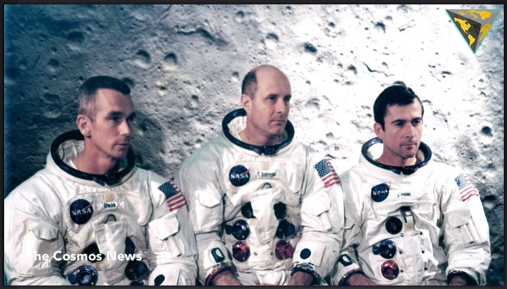

Franklin
Today's Weather
- High: 90°
- Low: 66°
- Chance of Precipitation: 0%
- Wind: 5mph from the South West
Sunny
Forecast Details
| 10-Day Forecast | |||||||||
|---|---|---|---|---|---|---|---|---|---|
| 1 | 2 | 3 | 4 | 5 | 6 | 7 | 8 | 9 | 10 |
| 89°F | 87°F | 78°F | 75°F | 72°F | 72°F | 79°F | 83°F | 85°F | 89°F |
This day in History

On this day in history will talk about The Apollo 10 mission that encompassed all aspects of an actual crewed lunar landing, except the landing. It was the first flight of a complete, crewed Apollo spacecraft to operate around the moon.
Apollo 10 launched from Cape Kennedy on May 18, 1969, into a nominal 115-mile circular Earth-parking orbit at an inclination of 32.5 degrees. One-and-a-half orbits later, translunar injection occurred. The S-IVB fired to increase velocity from 25,593 to 36,651 feet per second on a free-return trajectory. Twenty-five minutes later, the CSM separated for transposition and docking with the LM, similar to the maneuver performed on Apollo 9. The orbital vehicle was comprised of the S-IVB stage, and its payload of the CSM, the LM and spacecraft-lunar module adapter, or SLA, shroud. The Apollo 10 crew members were Commander Thomas Stafford, Command Module Pilot John Young and Lunar Module Pilot Eugene Cernan.